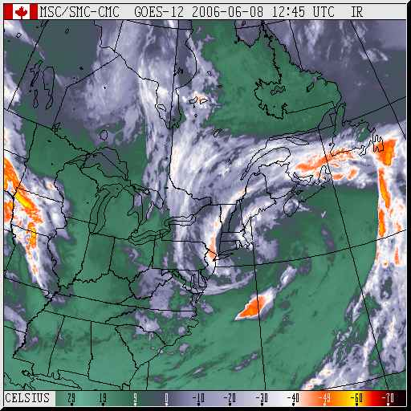
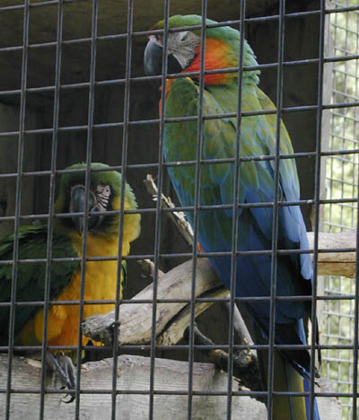
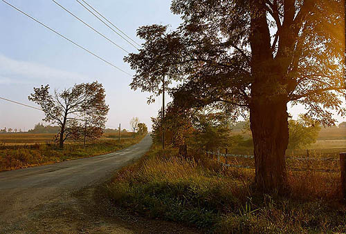
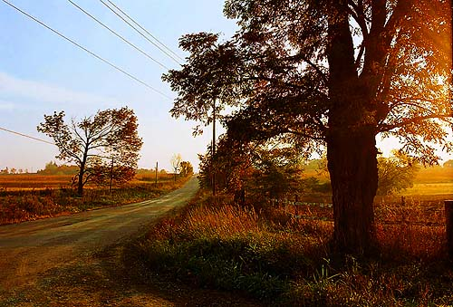

|
Colour 101Version 1.0, © 2006 by Dale Cotton, all rights reserved I sometimes crankily feel that colour is too precious a commodity to be entrusted to photographers. After all, photographers got along without it for a hundred years. Greyscale (AKA black and white) has a nice limited pallet and therefore has that much less to go wrong. If a photographer wants to graduate from greyscale to full colour she should be required to pass a colour "driving" test (orange and chartreuse go together when?). But enough grouching...  The most fundamental thing we need to understand about colour is that it doesn't exist. Figure 1 shows a "false colour" weather radar map in which pure colours are used to code for temperature. The interesting thing about this is that all colour is false colour - the world out there is "really" greyscale. Physics has shown that red light is electromagnetic radiation at wavelengths around 470 nanometers; blue light at 770 nanometers, etc. Striking the retina, these photons trigger the transmission of nerve impulses (which still have no colour), which in turn sparks further neural activity in the brain. In other words, the sensation of redness or blueness is something that happens inside your head - and for precisely the same reason as the false colours in a weather map - to help us analyze incoming data in real time. If I can see a lion as being dramatically distinct from the the grass she is lurking in, I am more liable to survive than if I have to think "hmmm ... some 550 nanometer photons incoming over there amidst a cluster of 680 nanometer photons ... I wonder what that's all about?". Ma Nature has had millions of years to fine-tune the false colour mapping used by our nervous systems. In general there are three broad classes of colours: the cool colours, shades of blue and green; the warm colours, shades of yellow and red; and the neutral colours, shades of white/grey/black. Cool colours are cool because they code for the primarily passive elements of our environment: vegetation and sky. Warm colours are attractive because they code for the primarily active elements of our enviroment ("you're getting warmer"), such as mammilian flesh, blood, and fur. Obviously, there is no law of nature preventing vegetation from donning warm colours (think flowers) or animals from donning cool colours (blue macaws), but the fact that we are alive here today to think about this stuff tells us that the warm/cool/neutral false colour system worked at least marginally more often than it failed.  Another colour axis is saturation. The primary, or saturated, hues are attention getters. If you want that attractive member of the opposite sex to notice your existence, adorn yourself with pure, bright colours as in Figure 2. If you're trying to hide from the neighbourhood lion, do just the opposite. For photographers that translates into Technicolor, Velvia, and Fuji digital cameras. If you want someone to notice your photograph in a sea of other photographs, saturated, crayon box colours are a good place to start (or is there now so much competition in this area that subdued colours will stand out in comparison?). If you want someone to not only notice but be attracted to your pictures, think warm saturated colours - red, orange, and yellow. The final colour axis is brightness. More photons = more brightness. What matters here, though, is contrast. A dark object on a light surround stands out; so does a bright object on a dark surround (which should once and for all end the silliness of racism but probably won't).  Juicing up your pictures with saturation and contrast may get you to first base in terms of attracting the viewer's eye. What it doesn't do is keep the viewer from looking away again just as quickly in response to the gag reflex kicking in. For that you need pleasing colour, which is another thing entirely. While saturated, contrasty colours can be arranged in a pleasing fashion, a serious problem is that the more saturated and contrasty your colours are the smaller your palette is. The smaller your palette, the more your pictures resemble other saturated, contrasy pictures - seen one, seen them all.  To make Fig 4 I started with the JPEG for Fig 3 then cranked up both saturation and contrast as far as I could stand. In the same way that children will prefer candy over cordon bleu, there's no denying Fig 4 grabs our attention and perhaps gives a greater initial kick of pleasure to the eye. Staying power is another question... Further reading
|